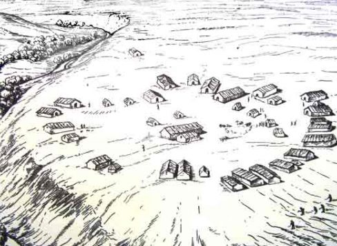
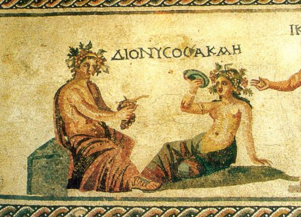
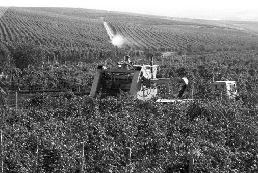
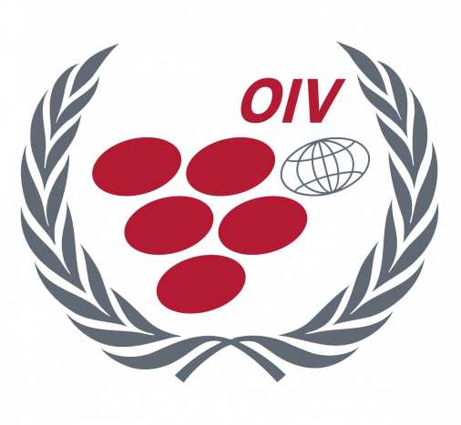
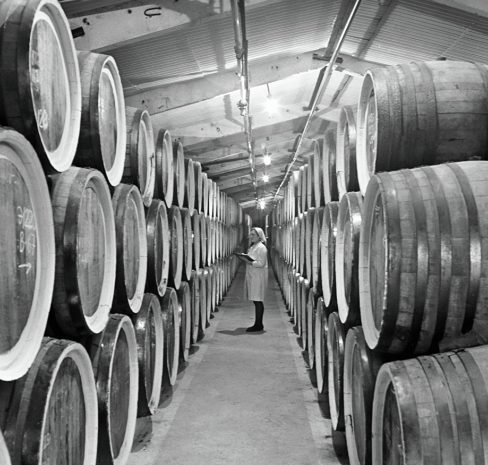

Vița de vie în perioada culturii Cucuteni-Tripolia
Prezența viței de vie pe teritoriul republicii este atestată din cele mai vechi timpuri, vestigiile datând din epoca Cenozoică (terțiară) (începe acum cca. 70 milioane ani în urmă) – amprenta frunzei viței de vie, aparținând reprezentantului speciei Vitis teutonica A.Br. (depistată în vecinătatea satului Naslavcea, raionul Dondușeni) și din epoca miocenului (începe acum cca. 23 milioane ani în urmă) – semințe de viță de vie aparținând speciilor V.aestivalis Michx. și Ampelopis (depistate în vecinătatea satului Bursuc, raionul Florești).
Domesticirea și introducerea în cultură a viței de vie de pădure (sălbatice) are loc, cel mai probabil, în perioada culturii Cucuteni-Tripolia – una din cele mai vechi civilizații din Europa (mil.VI – IV î.Hr.), care a cuprins și teritoriul actual al Republici Moldova. În această perioadă (eneoliticul mijlociu și târziu) populația din ținut cultiva grâu, orz, mei, ovăz, mazăre, borceag, precum și corcoduș, prun, zarzăr, vița de vie, ale căror sâmburi și semințe au fost depistate în mai multe așezări.
Vestigiile arheologice includ prezența unei urme de sămânță de viță de vie (imaginea imprimată pe un ciob de ceramică) datată cu mijlocul mileniului IV î.Hr. (cultura Cucuteni-Tripole timpurie), depistată în localitatea Ruseștii Noi, raionul Ialoveni. A doua mostră se referă la urma de sămânță depistată în localitatea Vărvăreuca, raionul Florești, datată cu prima parte a mileniului III î.Hr. (cultura Cucuteni-Tripole mijlocie). Ambele semințe corespund viței de vie de cultură, prima aparținând unui soi cu bob mic, iar a doua – unui soi cu bob mare.


Vița de vie în perioada colonizării grecești a litoralului de nord-vest al Mării Negre (Pontus Euxinus) (Olbia, Tyras, Histria)
Coloniile greceşti, amplasate pe întreg malul nordic al Mării Negre, au apărut la sfârşitul sec. VIII – începutul sec. VII î.e.n. (î.H.), inițial cu rol de centre comerciale de tranzit, care apoi au început producerea proprie a mărfurilor necesare populației locale și comercializarea lor. Între aceste centre și populația din zonele de jur s-au stabilit contacte economice permanente: grecii aduceau pe piața getică ceramică de lux, diverse podoabe din aur și argint, vin de înaltă calitate și untdelemn.
Putem presupune că la începuturile colonizării grecești populația locală cultiva deja vița de vie, dar numărul de soiuri era limitat. Aceste soiuri, adaptate la condițiile locale de creștere, dar și tehnologiile aplicate, nu asigurau obținerea vinurilor care să atingă calitatea vinurilor grecești, ca rezultat, vinurile grecești erau la mare căutare, fiind unul din componentele comerțului. Odată cu instalarea în regiune a coloniștilor greci, au fost introduse și o serie de soiuri, aduse de ei, care s-au adaptat condițiilor locale de cultivare sau au generat, în rezultatul încrucișărilor cu soiurile locale, soiuri noi; s-au introdus procedeele tehnologice de cultivare a viței de vie – plantații dense, tăiere scurtă, sarcină de rod mică. Despre gradul înalt de dezvoltare a viticulturii în regiune ne vorbesc și monedele din or. Tiras, provenite din sec. III şi II î.H, pe care era reprezentată viţa de vie.
Vița de vie în perioada geto-dacilor
Istoricul grec Herodot (anii 484-425 î.Hr.), care un timp a locuit în Tira (pe parcurs Cetatea Albă, Akkerman, actualmente Belgorod-Dnestroskii), unul dintre primii istorici antici, care au descris viața și obiceiurile sciților (predecesorii geto-dacilor, care locuiau pe aceste teritorii), relatează faptul că sciții aveau vin din belșug și-l consumau ediluat, deci putem afirma că viticultura de mult timp era deja o îndeletnicire a populației locale.
Răspândirea (primirea) creștinismului și cultura vinificației în cadrul mănăstirilor
Odată cu răspândirea creștinismului în rândul populației locale, vinul devine un obiect de rit – este utilizat la împărtășanie. Aceste circumstanțe obligau bisericile, mănăstirile să producă sau să procure vin roșu de calitate. În epoca medievală apar primele podgorii– locuri cu sol propice cultivării viţei de vie, de regulă prevăzute cu crame, construcții ușoare în cadrul cărora se prelucrau strugurii, obţinându-se vinul.
Vița de vie în perioada constituirii statului fe0dal
Începând cu sfârșitul sec. XII, când pe ruinele vechii Dacii s-au format noile principate, Valahia și Moldova, viticultura a început să dețină un loc mai important în economia țării, dar capătă o dezvoltare suficientă numai către sec. XIV. În gramotele domnitorilor moldoveni din acea perioadă se menționează despre plantații mari de livezi și vii, despre colectarea zeciuielii de la producția de struguri, de la prisăci și de la producția de vinuri, despre exportul vinurilor în orașele din Rusia și Polonia. La dezvoltarea vinificației a contribuit și amplasarea geografică a țării: prin ea treceau importante căi comerciale (pe Dunăre, Prut, Nistru și Marea Neagră).
Moldova principalul furnizor de vin pe piața rusească și poloneză
Din secolul al XIV-lea. economia moldovenească a crescut considerabil. Agricultura a stat la baza acesteia. Viticultura a avut o mare importanță în agricultură. Datorită amplasării sale strategice, numeroase rute comerciale au trecut prin principatul Moldovei: din Polonia și Germania până în Bizanț, din Ungaria și Transilvania până în principatele rusești, din Țara Românească în Polonia. Unul din cele mai populare bunuri de export ale principatului Moldovei era vinul.
Pentru a consolida alianța cu statul rus împotriva turcilor otomani, care amenințau principatul moldovenesc, domnitorul Ștefan cel Mare (1457-1504), în 1483 și-a căsătorit fiica, pe Elena Ștefanova Voloșanca, cu fiul cel mare al lui Ivan al III-lea Vasilievici al Rusiei – Ivan cel Tânăr. Datorită acestui fapt, legăturile comerciale și culturale cu statul rus s-au dezvoltat activ, inclusiv aprovizionarea cu vin
În cei 300 de ani de ocupație otomană, viticultura moldovenească a fost în declin, deoarece vinificarea a fost interzisă până în 1812, când a fost semnat Tratatul de pace de la București.
1596 -Moldova principalul furnizor de vin pe piața rusească și poloneză.
Rolul și aportul lui Dimitrie Cantemir – prima clasificare a vinului
În capitolul ”Despre câmpiile și pădurile Moldovei”, Dimitrie Cantemir, în ”Descrierea Moldovei”, remarcă plantațiile de viță de vie ca una dintre cele mai mari bogății ale pământului Moldovei. Totodată, autorul efectuează și o clasificare a vinurilor produse în Țara Moldovei:
”Cel mai ales” – vinul de Cotnari, este considerat ”mai ales și mai bun decât alte vinuri evropenești și chiar decât vinul de Tokay”.
Pe următoarele locuri sunt plasate, respectiv, vinul de la Huși, vinul de Odobești, de Nicorești, vinul produs în ținutul Tecuciului, și vinurile de Grecești și de Costești din ținutul Tutovei.
Aceste vinuri sunt de folos nu numai pentru nevoile locuitorilor țării, dar atrage aici negustori ruși, leși, cazaci, ardeleni, unguri.
Viile bune, altădată, ale Basarabiei, aflată în acea perioadă sub ocupația turcească, s-au părăginit. Totuși, se mai produce vin pentru consumul local în părțile Chiliei și Ismailului.
Perioada înainte de URSS
Evenimentele politice și sociale care s-au produs la începutul sec. XX au influențat în mare măsură viticultura și vinificația Basarabiei. Nu a reușit bine ramura să-și revină după invazia filoxerei și bolilor criptogamice, că bunul mers a fost afectat de perturbările sociale: primul război mondial, revoluțiile din Rusia, formarea Republicii Democratice Moldovenești, încadrarea în noul context socio-economic după reunirea cu România.
De la obișnuitele 5-6 milioane vedre de vin, către anul 1918 producția de vinuri în Basarabia a scăzut la 3,5 milioane vedre, nu se practica maturarea vinurilor. Lipsa piețelor de desfacere, costurile mari legate de înființarea și întreținerea noilor plantații și lipsa creditelor preferențiale pentru dezvoltare ș.a. au frânat inițial dezvoltarea ramurii. În aceste condiții au sporit considerabil suprafețele plantate cu hibrizi direct producători – cca.93% din toată suprafața ocupată cu vii. La începutul anilor 40 ai sec. trecut au fost inițiate un șir de măsuri orientate la ameliorarea stării lucrurilor, la sporirea competitivității vinurilor produse în Basarabia – defrișarea plantațiilor de hibrizi, încurajarea plantării soiurilor europene, obiective care nu au fost pe deplin realizate, iar odată cu izbucnirea celui de al doilea război mondial – diminuate semnificativ.
Perioada URSS – viticultura de masă, cea mai mare recoltă și suprafață
Conform recensământului plantațiilor viticole efectuat în anul 1945 suprafața plantațiilor viticole constituia cca. 98,5 mii ha, cu cca. 15% goluri în mediu, preponderent fiind prezente plantații cu vârsta mai mare de 20 de ani. Soiurile europene dețineau cca. 7% din suprafața totală de vii, numeric mai răspândite fiind Aligote, Chasselas, Gamay noir, Muscat blanc, Cinsuat, Cabernet Sauvignon, Riesling, Pinot gris ș.a., iar dintre soiurile vechi autohtone – soiul Rară Neagră. În urma măsurilor de restabilire și dezvoltare a sectorului vitivinicol, către anul 1953 suprafața plantațiilor viticole a sporit până la 106 mii ha, 83% dintre care erau deja concentrate în colhozurile create. Din punct de vedere al componenței sortimentale, cota parte a HDP rămânea încă foarte ridicată (cca.91%), starea lucrurilor începând să se amelioreze după anul 1958, suprafețele cu hibrizi fiind practic lichidate către sfârșitul anilor 90 ai secolului trecut. A fost elaborat sortimentul recomandat pentru cultivare industrială (anii 1945, 1952, 1958, 1964), evidențiate zonele viticole principale, determinate direcțiile principale de cultivare a strugurilor. S-a luat orientarea spre mărirea suprafețelor ocupate cu soiurile Aligote, Fetească, Riesling, Rkațiteli, Traminer ș.a. – pentru vinuri albe și Cabernet Sauvignon, Merlot, Malbec, Saperavi, Serecția, Gamay freaux – pentru
vinuri roșii.

Lupta cu alcoolismul
La 16 mai 1985 este emis Ucazul Sovietului Suprem al URSS „Despre măsurile de eradicare a beției şi alcoolismului, fabricării basamacului”, care a completat Hotărârea CC a PCUS „Despre măsurile de eradicare a beției şi alcoolismului” și a Hotărârea nr. 410 a Consiliului de Miniștri al URSS „Despre măsurile de eradicare a beției şi alcoolismului, fabricării basamacului” din 7 mai 1985.
Era prevăzută reducerea producerii băuturilor alcoolice, locurilor și timpului de realizare, pedepsirea celor care abuzează de alcool. Specificul acestei campanii, prin comparație cu cele anterioare, din 1958 şi 1972, era că trebuia redus la minim producerea băuturilor spirtoase prin distrugerea masivă a viilor. Astfel, din 1985 până în 1987, au fost distruse 30 % plantații viticole, mai mult decât cele distruse în cadrul operațiilor militare din timpul celui de-al doilea război mondial. Au suferit mai ales exploatările de viță de vie din Georgia, sudul Rusiei și Moldova.
Statul sovietic pierdea anual aproape jumătate din veniturile sale de la industria alimentară (de la 60 la 36 mld. ruble), ceea ce a accentuat și mai mult criza economică a regimului.
Aderarea Republicii Moldova la OIV
În 1992 a fost lansată reorganizarea marilor gospodării colective, s-a preconizat ieşirea ţăranilor din colhozuri şi sovhozuri.
În 1992, Republica Moldova, prima dintre țările post-sovietice, a devenit stat-membru al Organizației Internaționale a Viei și Vinului (OIV). Anterior, membru al OIV era Uniunea Sovietică.


Adoptarea primei Legi cu privire la vie și vin
În 1994, Parlamentul Republicii Moldova a adoptat Legea viei și vinului, care a devenit prima lege în acest domeniu în țările CSI (în URSS, în componența căreia intra și RM, nu exista o astfel de lege). Nu era nici măcar în toate țările viticole europene. Prin această lege se acorda o atenție deosebită procesului de producere a vinului, precum și altor produse vitivinicole cu denumire de origine. În 2006, a fost adoptată Legea Nr. 57 din 10 martie 2006 a viei și vinului.
Embargoul rusesc I, Embargoul rusesc II
Până în anul 2006, Republica Moldova se număra printre cei mai mari zece exportatori de vin din lume.În martie 2006, Federația Rusă a impus un embargou la importul de vinuri din Republica Moldova, valabil aproape doi ani, fapt ce a dus la pierderea de către vinificatorii moldoveni a accesului la piața rusească a vinului, la acel moment, constituind 80% din băuturile alcoolice moldovenești.Producţia de vin a scăzut cu circa 63% faţă de anul 2005, exporturile s-au diminuat cu 41%, industria a scăzut cu 7%, iar PIB-ul ţării s-a majorat doar cu 4%, faţă de aşteptările de peste 6%. În acelaşi timp, companiile vinicole s-au ales cu pierderi directe de circa 185 milioane dolari, rezultate din creanţele ce nu vor mai putea fi recuperate vreodată.Același scenariu, la fel, cu tentă politică a fost repetat în septembrie 2013. De aceasta dată, pagubele au fost mai mici datorită faptului că producătorii autohtoni și-au diversificat căile de export spre Belarus, Kazahstan, Ucraina, UE, Asia, etc. După crizele puternice din 2006-2011, sectorul vitivinicol al Moldovei a mizat pe producerea vinurilor de calitate, pe diversificarea piețelor și modernizarea industriei.
2014
Acord de asociere între RM și UE, Acord DCFTA – acces fără taxe vamale pe piața UE
În iunie 2014, a fost semnat Acordul de asociere RM-UE, care se bazează pe crearea unei zone de liber schimb aprofundate și cuprinzătoare – DCFTA. Acordul DCFTA a oferit produselor vinicole moldovenești acces fără taxe vamale pe piața UE.
Anterior, din 2007, producătorii se bucurau de preferințe comerciale autonome atunci când furnizau produse vinicole (cu excepția vinurilor spumante) către țările Uniunii Europene. Volumele anuale de vin permise exportului erau insuficiente și creau impedimente în calea exportului.